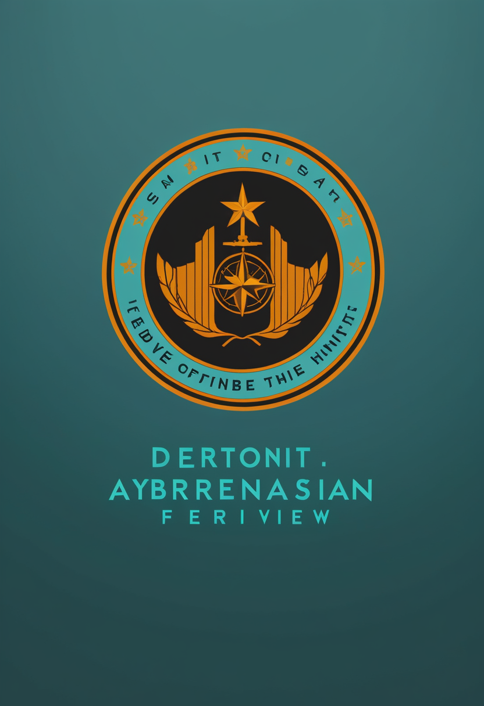
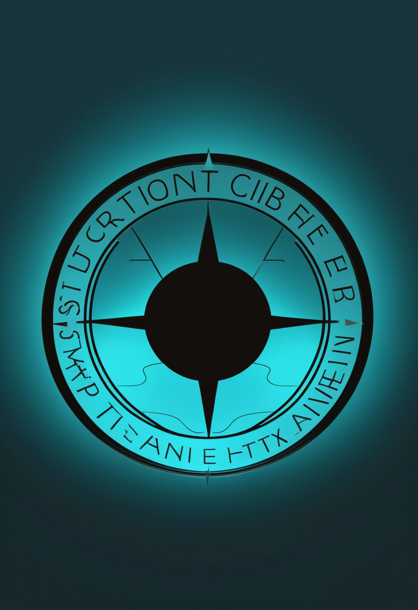
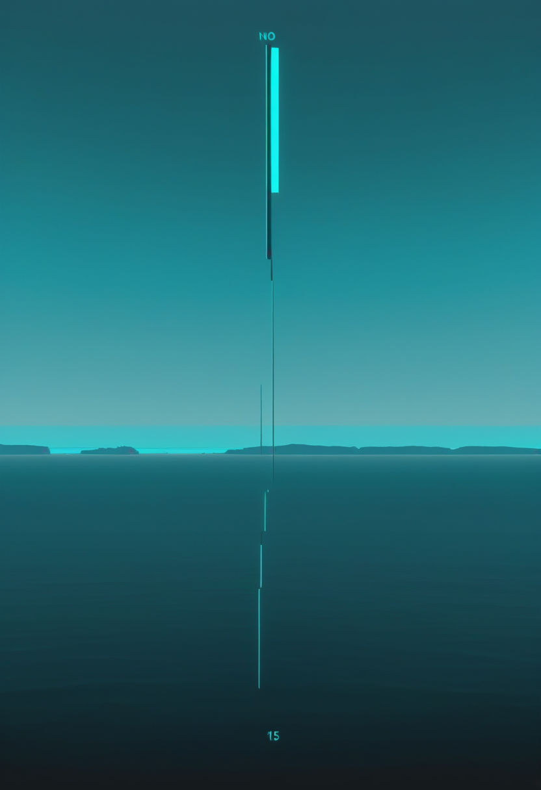

米国が麻疹の『排除国』を26年ぶりに失う。確定例は1991年以来最多の5,400例超。

汎米保健機構(PAHO)の専門委員会による審査(11/10〜13、非公開)を受け、PAHOが米国の麻疹排除の地位を取り消したと、ウォール・ストリート・ジャーナルが11/13に最初に報じ、ロイターやCNNも伝えた。判断基準は『同じ系統のウイルスが12か月以上途切れずに国内で広がったか』で、CDCの非公開報告が12か月の連続感染を認めたとされる。米国は2000年に排除を達成していた。11/13にはペンシルベニア州とウィスコンシン州が1人ずつ新たな死亡を発表し、州発表ベースで今年の麻疹関連の死者は10人になった(CDCの集計とは分類の違いで差がある)。2026年の確定例は報道で5,400例超(CDCの11/5時点の公式値は5,182例)と1991年以来の多さ。地位を取り戻すには、国内での連続した流行を少なくとも12か月断つ必要がある。カナダは2025年11月に同じ理由で地位を失っている。PAHOの正式な声明文は本号の時点で確認できていない。
SMAの筋力低下を対象に9月に米国で承認された筋肉標的薬ISEMBYLD(アピテグロマブ)について、Scholar Rockは11/10の第3四半期決算説明会で、日本で子どもと大人のSMAを対象とする新薬承認申請(JNDA)を提出したと説明した(説明会の書き起こしに基づく、会社の個別の発表文は未確認)。同社は8月の時点で『年内までに申請』としており、日本の当局とは、日本人患者のデータなしで海外の試験に基づいて申請できることで合意していた。対象は、スピンラザなどSMN2を標的とする治療を受けている2歳以上の患者(米国の承認内容)。欧州でも充填工場の変更を経て申請を再提出済みで、CHMPの見解は2027年前半の見込み。
スピンラザの後継として開発中のBiogenのサラネルセン(BIIB115)は、年1回80mgを脊髄の周りに注射する薬で、FDAの画期的治療薬に指定されている。第3相のうち、15〜60歳で未治療かリスジプラム(エブリスディ)を使っている人が対象のSOLAR(90人予定、2026年4月開始)と、生後6週未満の発症前の新生児が対象のSTELLAR-1が参加者を募集中。報道では3つの第3相すべてが登録を始めたとされるが、ゾルゲンスマ既治療児対象の試験(NCT07444450)の最新状況は登録情報で確認できなかった。
ISEMBYLDは日本申請という次の節目に進み、サラネルセンも新しい試験名で裾野を広げている。SMA治療薬は承認・申請・治験それぞれの段階が同時に動いている。
血管の中から脳の信号を読み取るBCI『Stentrode』を開発する米Synchronが、米国・オーストラリア・カナダの治験施設で新たな参加者の登録を一時止めたとWIREDが11/12に報じた。原因は、Stentrodeの信号を体内の電子機器へ運ぶケーブル(リード線)の性能問題で、同社は『Stentrode本体の問題ではなく、機器による安全上の問題は見つかっていない』『FDAの指示ではなく自社判断』と説明。リード線の設計・製造を社内に移し、システム全体を改良してから登録を再開するという。再開時期は未定で、承認に必要な大規模試験(ピボタル試験)への移行が遅れる可能性がある。すでに植え込んだ参加者の支援は続ける。
中国のBCI関連の報道まとめによると、11月に入って暖芯迦、上海主動科技、明視脳機の3社がそれぞれ1億元を超える資金調達を終えた。2026年上半年の国内BCI分野の資金調達は64件・約72.5億元(IT桔子のデータ)。上海市科学技術委員会の幹部は、市内で侵襲型BCI医療機器の植え込みが行われ、ほかに5製品が登録のための臨床試験か申請の段階にあると説明した。前号の業界標準9項目の立項に続き、『資金・臨床・標準』がそろって動いている。数値は報道まとめに基づき、各社の発表文は未確認。
体に入れる機器では、電極そのものより『配線』のような周辺部品がつまずきの元になりやすい。中国は資金・臨床・標準の三本柱で歩みを緩めない。
WSJ・ロイターの報道によると、PAHOは米国で同じ系統の麻疹ウイルスが12か月以上連続して広がったと判断し、26年間保ってきた排除の地位を取り消した。発端は2025年1月に西テキサスで始まった大流行で、その後の各地の集団発生とのつながりが焦点だった。11/13にはペンシルベニア州とウィスコンシン州でそれぞれ1人の死亡が追加され、州の発表ベースで今年の死者は10人。感染者の約96%はワクチン未接種か接種歴不明とされる。
WHOのテドロス事務局長は11/11の加盟国向け説明で、コンゴ民主共和国(DRC)の確定例は約1万1,000例、死者は5,300人超、8州に広がっていると述べた。一部の地域では感染の減速という明るい兆しがある一方、新たな流行地が出続けているという。国連によると、流行宣言以来、WHOが確認した医療施設への攻撃は81件で、武装勢力ADFによる殺害が対応を妨げている。DRC政府の11/9の集計は確定11,042例・死者5,387人、米CDCは11/10時点で確定11,145例・死者5,437人(前号と同じ値、機関で集計日・定義が異なる)。MSFは11/12に『半年たっても制御できていない』と警告した。

米カリフォルニア州サンディエゴ郡は11/13、10月以降にmpoxの確定例が16例、今年の累計が48例になったと発表し、報告の頻度を月1回から週1回に増やした。州内の移動にともなう感染が原因とみられている。前号まで伝えたスタニスラウス郡のクレードI例との関係や、今回の型(クレード)は発表からは確認できなかった。
米国は『排除国』の地位を失い、公衆衛生の後退が数字として確定した。エボラは減速の兆しと治安悪化が同時に進み、mpoxは州内で広がりを見せる。
チリのベラ・ルービン天文台が本格観測の前に取った試験データ(2025年4月〜2026年1月)から、天の川銀河のまわりを回る新しい天体が2つ見つかった。1つは地球から約35万5,000光年の外側の領域にある、非常に暗い矮小銀河『Aquarius IV』、もう1つは銀河の反対側の厚いちりに隠れた星団『Rubin-GC1』。空の約7%を調べただけでの発見で、研究チームは10年の観測で最大100個ほどの伴天体が新たに見つかる可能性があるとしている(既知は約65個)。Aquarius IVの論文は査読前との情報がある。
IBMは11/11、次世代の量子プロセッサ『Nighthawk r3』を発表した。2,034個の物理量子ビットのうち520個をプログラムに使い、1万回の量子演算を正確に実行できるよう設計する。チップどうしをつなぐ接続(lカプラー)を10本備え、2027年に2枚を連結して1,000量子ビット超(1,040とする報道も)にする計画。現行のr2は120量子ビットで7,500回超の演算に対応する。r3は設計目標で、まだ出荷品ではない。
シカゴの米国心臓協会学会(AHA 2026)で発表され、NEJMに掲載された2つの第3相試験が、ともに心筋梗塞や脳卒中などの心血管イベントを減らせなかった。遺伝的に高いことが多いリポたんぱく(a)を下げるペラカルセン(Lp(a)HORIZON、約8,300人)は、Lp(a)を77.7%下げたが、イベントのハザード比は1.02だった。炎症を抑えるIL-6抗体ジルチベキマブ(ZEUS、6,376人、慢性腎臓病を合併)もハザード比0.99で、重い感染症がやや多かった(20.4%対17.9%)。専門家は『1つの試験でLp(a)を下げる考え方自体が否定されたわけではない』とし、ほかのLp(a)低下薬の試験は続いている。
ルービン天文台は伴天体探しの新時代を予告し、量子ではIBMが次の世代を示した。心血管の2つの大型試験は『数値が動いても患者は守れない』という重い教訓を残した。
11月の論考『AI Consciousness and the Cost of Being Wrong』は、2026年の論文『From Cacophony to Hierarchy』を取り上げ、言語モデルに意識がある可能性の見積もりが、どの意識理論を採るかで1%未満から約80%まで割れることを紹介した。同論考は、今のシリコンAIに意識がある可能性は極めて低いとするSeth・Block・TononiのNature論考(10月、既報)にも触れ、『間違えたときの代償』をどう考えるかを問う。オックスフォード大学出版局からは、AIがすでに、または近く『福祉(ウェルフェア)』を持ちうるとして9つの未解決の問いを示す論集『AI Welfare: Agency, Consciousness, Sentience』も出た。
スペイン・カディス大学のエドゥアルド・ビハンデ=ビラ氏らの研究チームが、南西部カディス県トラファルガル岬の砂丘の下で2基の巨石墓を発掘し、学術誌PLOS Oneに発表した。岩を掘り込んだ楕円形の1号墓には少なくとも13人分、層状の屋根をもつ円形の2号墓には少なくとも7人分の遺骨があった。1号墓には若い女性の完全な骨格が残り、放射性炭素年代測定でこの埋葬が墓を封じる最後の埋葬だったとみられる。金の耳飾りや銀のビーズ、象牙の櫛などが出土し、遠隔地との交流をうかがわせる。両墓は紀元前1875〜1625年頃の約200年間使われたとみられ、個人墓が一般化した後も巨石墓という墓制が一部で続いていたことを示す。
ベルギー王立自然科学研究所の動物考古学者ウィム・ヴァン・ネール氏らが、ウィーン自然史博物館が所蔵する、エジプト中部ベニ・ハサン墓地出土の猫のミイラの頭蓋骨131点を調べ、学術誌Journal of Archaeological Scienceに発表した。歯周炎26点、歯の欠損24点、表面の穴状損傷35点、感染や栄養ストレスを示しうる眼窩の穴19点、骨折や刺し傷などの外傷14点が確認された。外傷の一部は鋭利な金属器具や鈍器によるとみられ、治癒痕のある傷は罰や動物同士の争いの可能性、致命傷はミイラ化の最初の工程で負わされた可能性があるという。研究チームは、猫が過密な環境で飼育されていたことが病気と暴力の背景にあったとみている。
AIに意識はあるかという問いは理論ごとに答えが割れたまま。4,000年前のイベリア半島の巨石墓とエジプトの猫のミイラは、人が死者とともに生きてきた長い記録を静かに語る。
今号の軸は『26年守られてきたものが、ついに失われた日』だった。米国は麻疹の排除国の地位を失い、1991年以来最多の確定例を記録した。BCIではSynchronが治験を一時停止し、量子ではIBMが次世代チップを示した。AIに意識はあるかという問いは今号も答えが出ず、4,000年前のイベリア半島の墓とエジプトの猫のミイラが、記録に残らなかった日常を静かに語った。
おやすみなさい、また明日。